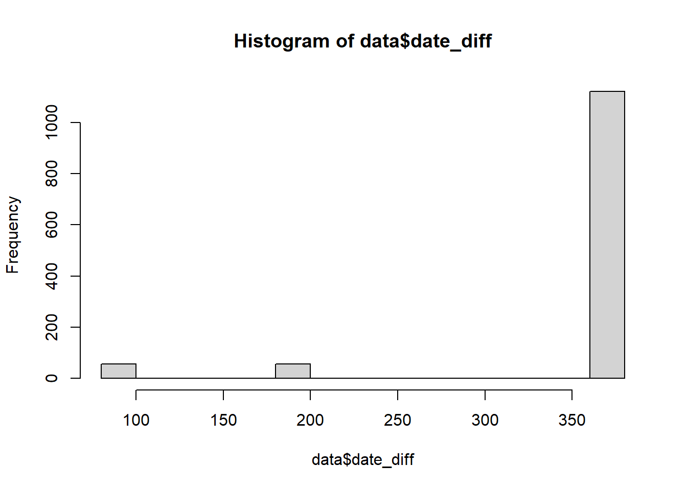
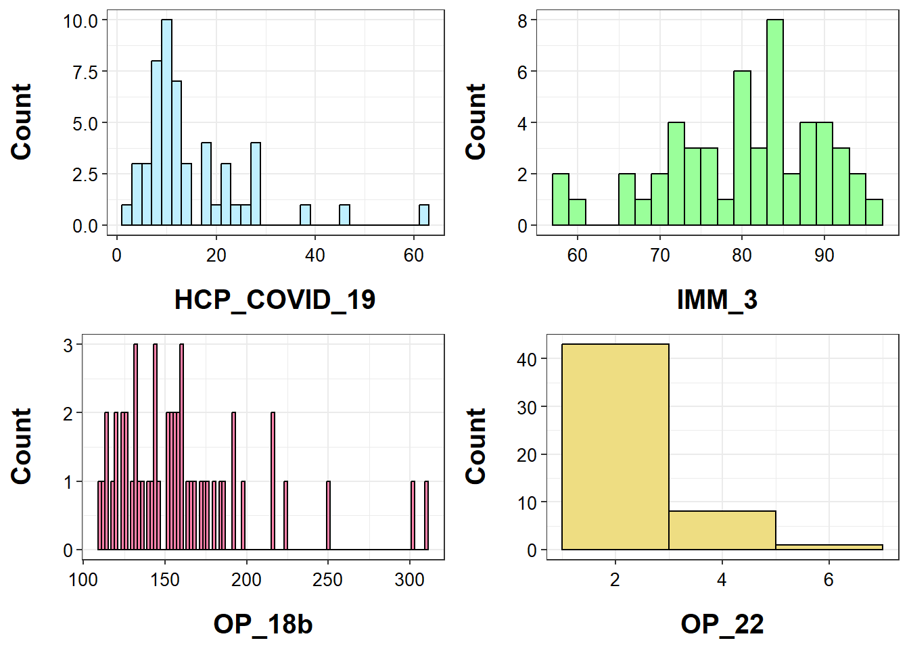
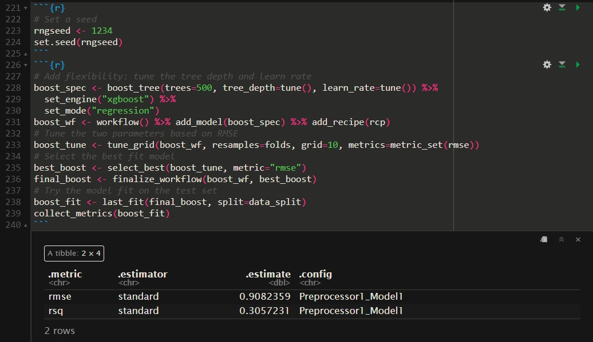
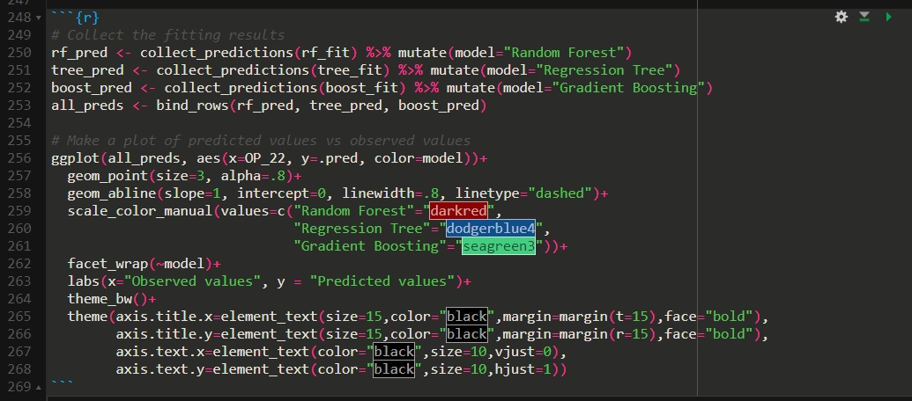
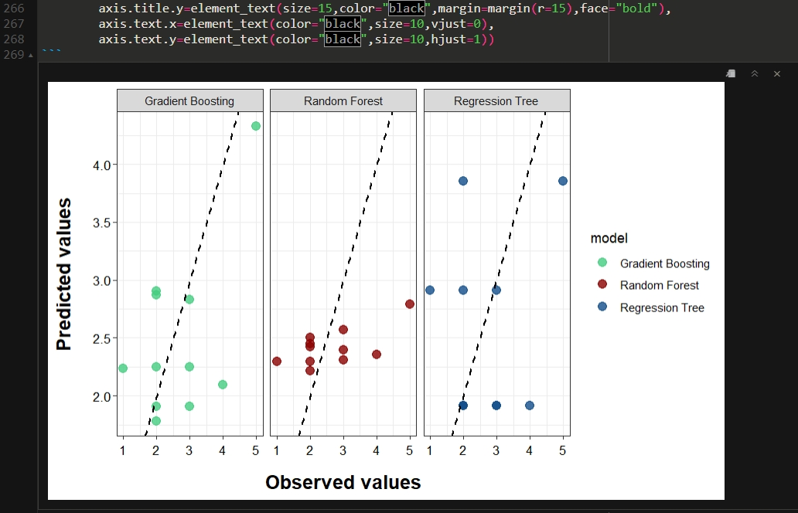
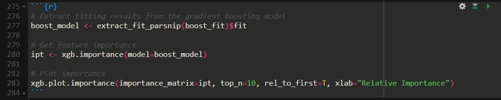
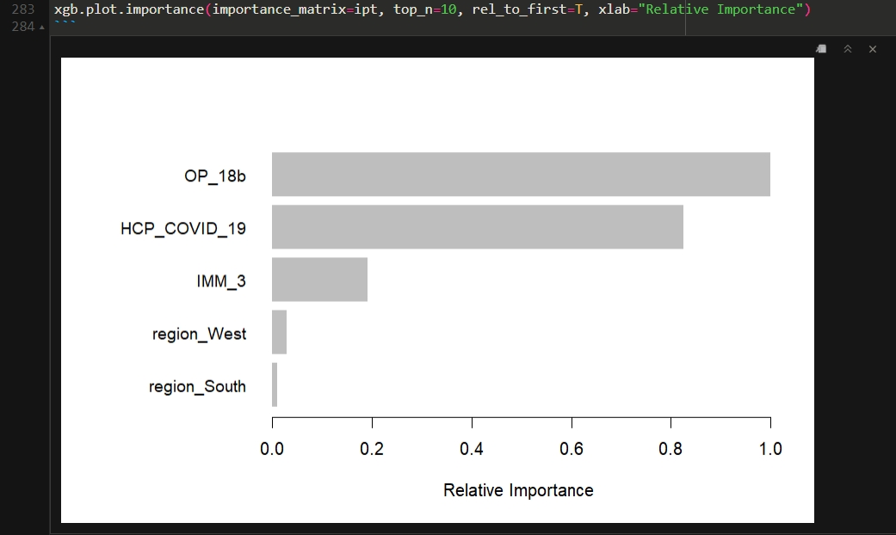

Below is an exercise for analyzing a data set from Tidytuesday. The data set contains state-level results for medicare.gov “timely and effective care” measurements. The data set can be downloaded from the website below:
The data set should have 8 variables as listed below.
state (character): The two-letter code for the state (or territory, etc) where the hospital is located.
condition (character): The condition for which the patient was admitted. Six categories of conditions are included in the data.
measure_id (character): The ID of the thing being measured. Note that there are 22 unique IDs but only 21 unique names.
measure_name (character): The name of the thing being measured. Note that there are 22 unique IDs but only 21 unique names.
score (character): The score of the measure.
footnote (character): Footnotes that apply to this measure: 5 = “Results are not available for this reporting period.”, 25 = “State and national averages include Veterans Health Administration (VHA) hospital data.”, 26 = “State and national averages include Department of Defense (DoD) hospital data.”.
start_date (date): The date on which measurement began for this measure.
end_date (date): The date on which measurement ended for this measure.
My research goal is to study whether geographic location by state (state), the percentage of healthcare personnel who are up to date with COVID-19 vaccinations (HCP_COVID_19), the percentage of healthcare workers given influenza vaccination (IMM_3), and the average time patients spent in the emergency department before leaving from a visit (OP_18b) can predict the percentage of patients who left the emergency department before being seen (OP_22).
Data processing and exploration
First of all, let’s import the data set and load required packages.
Warning: package 'ggpubr' was built under R version 4.2.3
Now let’s take a first look at the data set.
# Look at the datadata <-read.csv(here("tidytuesday-data","care_state.csv"))data$start_date <-as.Date(data$start_date) # Convert start datedata$end_date <-as.Date(data$end_date) # Convert end datesummary(data)
state condition measure_id measure_name
Length:1232 Length:1232 Length:1232 Length:1232
Class :character Class :character Class :character Class :character
Mode :character Mode :character Mode :character Mode :character
score footnote start_date end_date
Min. : 1 Length:1232 Min. :2023-01-01 Min. :2023-12-31
1st Qu.: 70 Class :character 1st Qu.:2023-04-01 1st Qu.:2024-03-31
Median : 93 Mode :character Median :2023-04-01 Median :2024-03-31
Mean :134 Mean :2023-04-05 Mean :2024-03-14
3rd Qu.:193 3rd Qu.:2023-04-01 3rd Qu.:2024-03-31
Max. :730 Max. :2024-01-01 Max. :2024-03-31
NA's :155
I want to look at the distribution of the data collection period for each record. If some of the records were collected within too short a period, I will drop them as they are not very representative.
# Distribution of time perioddata$date_diff <-as.numeric(data$end_date - data$start_date)hist(data$date_diff)

table(data$date_diff)
90 182 364 365
56 56 224 896
As shown, some of the records covers a time period of 90 days or 182 days. I think that is enough to reflect the average status of a state. I will drop the columns denoting dates. I will also drop measure_name, condition, and footnote as they are redundant for data analysis.
# Drop useless columnsdata <- data %>%select(state, measure_id, score)summary(data)
state measure_id score
Length:1232 Length:1232 Min. : 1
Class :character Class :character 1st Qu.: 70
Mode :character Mode :character Median : 93
Mean :134
3rd Qu.:193
Max. :730
NA's :155
Next, I will only keep the records of interest of this study. To be specific, I will only keep HCP_COVID_19, IMM_3, OP_18b, and OP_22 from the column measure_id. I will also drop
# Keep *HCP_COVID_19*, *IMM_3*, *OP_18b*, and *OP_22*data <- data %>%filter(measure_id %in%c("HCP_COVID_19", "IMM_3", "OP_18b", "OP_22"))summary(data)
state measure_id score
Length:224 Length:224 Min. : 1.00
Class :character Class :character 1st Qu.: 5.00
Mode :character Mode :character Median : 58.50
Mean : 64.92
3rd Qu.: 99.50
Max. :310.00
NA's :16
Now, I will pivot the data to a wider format. Also, I will drop rows with missing scores.
# Transform data structuredata <- data %>%pivot_wider(names_from=measure_id, values_from=score) %>%filter(!is.na(OP_22))summary(data)
state HCP_COVID_19 IMM_3 OP_18b
Length:52 Min. : 2.70 Min. :58.00 Min. :110.0
Class :character 1st Qu.: 8.70 1st Qu.:74.75 1st Qu.:133.0
Mode :character Median :11.10 Median :82.50 Median :154.5
Mean :15.20 Mean :80.77 Mean :161.2
3rd Qu.:18.75 3rd Qu.:88.00 3rd Qu.:174.5
Max. :62.00 Max. :96.00 Max. :310.0
OP_22
Min. :1.000
1st Qu.:2.000
Median :2.000
Mean :2.538
3rd Qu.:3.000
Max. :6.000
As for states, it’s hard to integrate geographic locations by too many categories. I will classify the states by their locations.
# Classify stateseast_states <-c("ME","NH","VT","MA","RI","CT","NY","NJ","PA","MD","DE","VA","NC","SC","GA","FL","WV")midwest_states <-c("OH","MI","IN","IL","WI","MN","IA","MO","ND","SD","NE","KS")south_states <-c("KY","TN","MS","AL","OK","TX","AR","LA")west_states <-c("MT","ID","WY","CO","NM","AZ","UT","NV","CA","OR","WA","AK","HI")data <- data %>%mutate(region=case_when(state %in% east_states ~"East", state %in% midwest_states ~"Midwest", state %in% south_states ~"South", state %in% west_states ~"West",TRUE~"Other")) %>%select(-state)summary(data)
HCP_COVID_19 IMM_3 OP_18b OP_22
Min. : 2.70 Min. :58.00 Min. :110.0 Min. :1.000
1st Qu.: 8.70 1st Qu.:74.75 1st Qu.:133.0 1st Qu.:2.000
Median :11.10 Median :82.50 Median :154.5 Median :2.000
Mean :15.20 Mean :80.77 Mean :161.2 Mean :2.538
3rd Qu.:18.75 3rd Qu.:88.00 3rd Qu.:174.5 3rd Qu.:3.000
Max. :62.00 Max. :96.00 Max. :310.0 Max. :6.000
region
Length:52
Class :character
Mode :character
Now let’s look at the distribution of the four continuous variables and the tables for regions.
# Distribution of variablesd1 <-ggplot(data, aes(x=HCP_COVID_19))+geom_histogram(binwidth=2, fill ="lightblue1", color="black")+labs(x="HCP_COVID_19", y="Count")+theme_bw()+theme(axis.title.x=element_text(size=15,color="black",margin=margin(t=15),face="bold"),axis.title.y=element_text(size=15,color="black",margin=margin(r=15),face="bold"),axis.text.x=element_text(color="black",size=10,vjust=0),axis.text.y=element_text(color="black",size=10,hjust=1))d2 <-ggplot(data, aes(x=IMM_3))+geom_histogram(binwidth=2, fill="palegreen1", color="black")+labs(x="IMM_3", y="Count")+theme_bw()+theme(axis.title.x=element_text(size=15,color="black",margin=margin(t=15),face="bold"),axis.title.y=element_text(size=15,color="black",margin=margin(r=15),face="bold"),axis.text.x=element_text(color="black",size=10,vjust=0),axis.text.y=element_text(color="black",size=10,hjust=1))d3 <-ggplot(data, aes(x=OP_18b))+geom_histogram(binwidth=2, fill="palevioletred1", color="black")+labs(x="OP_18b", y="Count")+theme_bw()+theme(axis.title.x=element_text(size=15,color="black",margin=margin(t=15),face="bold"),axis.title.y=element_text(size=15,color="black",margin=margin(r=15),face="bold"),axis.text.x=element_text(color="black",size=10,vjust=0),axis.text.y=element_text(color="black",size=10,hjust=1))d4 <-ggplot(data, aes(x=OP_22))+geom_histogram(binwidth=2, fill="lightgoldenrod", color="black")+labs(x="OP_22", y="Count")+theme_bw()+theme(axis.title.x=element_text(size=15,color="black",margin=margin(t=15),face="bold"),axis.title.y=element_text(size=15,color="black",margin=margin(r=15),face="bold"),axis.text.x=element_text(color="black",size=10,vjust=0),axis.text.y=element_text(color="black",size=10,hjust=1))ggarrange(d1, d2, d3, d4, ncol=2, nrow=2)

table(data$region)
East Midwest Other South West
17 12 2 8 13
Random forest
First of all, I want to fit a random forest model on this data set. I will split the data using a split ratio of 1:4. I will also use 5-fold CV to examine the performance of the RF model. Specifically, I want to tune the two parameters in the RF model (i.e., mtry and min_n) and select the best fit model based on RMSE. Finally, I will demonstrate the performance of the RF model by RMSE and R-square.
# Random forest modelrcp <-recipe(OP_22 ~ HCP_COVID_19 + IMM_3 + OP_18b + region, data=train_data) %>%step_dummy(all_nominal_predictors()) %>%step_normalize(all_numeric_predictors())# Add flexibility: tune the two parametersrf_spec <-rand_forest(mtry=tune(), min_n=tune(), trees=500) %>%set_engine("ranger") %>%set_mode("regression")rf_wf <-workflow() %>%add_model(rf_spec) %>%add_recipe(rcp)# Tune the two parameters based on RMSErf_tune <-tune_grid(rf_wf, resamples=folds, grid=10, metrics=metric_set(rmse))
i Creating pre-processing data to finalize unknown parameter: mtry
! Fold1: preprocessor 1/1, model 6/10: 37 samples were requested but there were 32 rows in the data. 32 will be...
! Fold1: preprocessor 1/1, model 10/10: 36 samples were requested but there were 32 rows in the data. 32 will be...
! Fold2: preprocessor 1/1, model 6/10: 37 samples were requested but there were 33 rows in the data. 33 will be...
! Fold2: preprocessor 1/1, model 10/10: 36 samples were requested but there were 33 rows in the data. 33 will be...
! Fold3: preprocessor 1/1, model 6/10: 37 samples were requested but there were 33 rows in the data. 33 will be...
! Fold3: preprocessor 1/1, model 10/10: 36 samples were requested but there were 33 rows in the data. 33 will be...
! Fold4: preprocessor 1/1, model 6/10: 37 samples were requested but there were 33 rows in the data. 33 will be...
! Fold4: preprocessor 1/1, model 10/10: 36 samples were requested but there were 33 rows in the data. 33 will be...
! Fold5: preprocessor 1/1, model 6/10: 37 samples were requested but there were 33 rows in the data. 33 will be...
! Fold5: preprocessor 1/1, model 10/10: 36 samples were requested but there were 33 rows in the data. 33 will be...
# Select the best fit modelbest_rf <-select_best(rf_tune, metric="rmse")final_rf <-finalize_workflow(rf_wf, best_rf)# Try the model fit on the test setrf_fit <-last_fit(final_rf, split=data_split)collect_metrics(rf_fit)
# A tibble: 2 × 4
.metric .estimator .estimate .config
<chr> <chr> <dbl> <chr>
1 rmse standard 1.00 Preprocessor1_Model1
2 rsq standard 0.400 Preprocessor1_Model1
As shown, the estimated RMSE for the RF model is 1.00 and the R-square is 0.40.
Regression tree
Then, I want to try if a single regression tree can fit the data set well. I will use the similar workflow as done with the RF model.
# Set a seedrngseed <-1234set.seed(rngseed)
# Add flexibility: tune the cost parameter and tree depthtree_spec <-decision_tree(cost_complexity=tune(), tree_depth=tune()) %>%set_engine("rpart") %>%set_mode("regression")tree_wf <-workflow() %>%add_model(tree_spec) %>%add_recipe(rcp)# Tune the two parameters based on RMSEtree_tune <-tune_grid(tree_wf, resamples=folds, grid=10, metrics=metric_set(rmse))# Select the best fit modelbest_tree <-select_best(tree_tune, metric="rmse")final_tree <-finalize_workflow(tree_wf, best_tree)# Try the model fit on the test settree_fit <-last_fit(final_tree, split=data_split)collect_metrics(tree_fit)
# A tibble: 2 × 4
.metric .estimator .estimate .config
<chr> <chr> <dbl> <chr>
1 rmse standard 1.21 Preprocessor1_Model1
2 rsq standard 0.0271 Preprocessor1_Model1
As shown, the estimated RMSE for the tree model is 1.21 but the R-square is only 0.03. The regression tree model has a higher RMSE but a much lower R-square compared to the RF model.
Gradient boosting
Last, I want to try the gradient boosting model. I will use the similar workflow as done above.
Somehow, the xgboost package won’t be loaded when I render the website. It’s the same problem as I encountered for presenting tables, and it has taken me another 20 hrs to fix it. I finally gave up because I tried all the way I could and didn’t find myself doing anything wrong. I will just attach all the outputs related to the gradient boosting model as screenshots.
All the codes can run through without any error on my lap-top. If you have any questions, please let me know. I can share my screen and show you how annoying this problem is.

As shown, the estimated RMSE for the gradient boosting model is 0.91 and the R-square is 0.31. The gradient boosting model has a lower RMSE and a lower R-square compared to the RF model.
Summary
Let’s make a plot to see the fitting performance of the three models.


As shown in the figure above, the gradient boosting model and the regression tree models have a more “reasonable” prediction of the response, since their points are more sparse. Somehow the random forest model only predicts the response within a small range, indicating a potential overfitting problem. Based on the numeric output, the random forest model has the highest R-square while the gradient boosting model has the lowest RMSE. Taking all outputs into consideration, I think the gradient boosting model can better fit the data set.
Back to our research question, let’s output the contribution of each predictor from the gradient boosting model.


As shown, the predictors can predict the response, with OP_18b (the average time patients spent in the emergency department before leaving from a visit) and HCP_COVID_19 (the percentage of healthcare personnel who are up to date with COVID-19 vaccinations) having the greatest contribution. Additionally, no regional difference is observed.